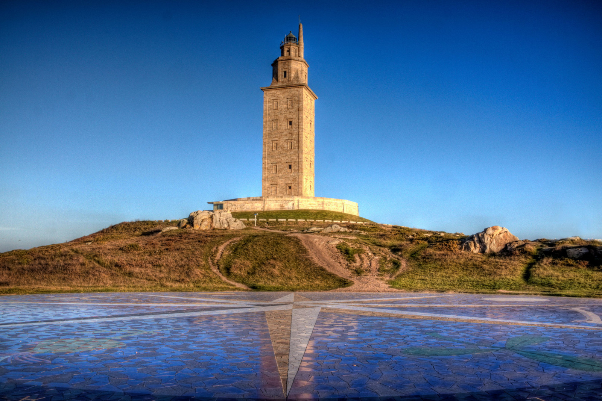

Faros de Galicia
Unha lista dalgúns faros de Galicia.

Faro de Fisterra: foi construído en 1853, está situado no cabo Fisterra, na provincia da Coruña. Está a 143 metros sobre o nivel do mar. Máis información na Wikipedia.

Faro de Illa Pancha: foi construído en 1859, está situado na Illa Pancha, en Ribadeo, na provincia de Lugo. Está a 28 metros sobre o nivel do mar. Máis información na Wikipedia.

Faro de Punta Robaleira: está situado en O Hío, en Cangas, na provincia de Pontevedra. Está a 27 metros sobre o nivel do mar.
Torre de Hércules: é unha torre e faro situado na península da cidade da Coruña. O 27 de xuño de 2009 foi proclamada Patrimonio da Humanidade. Foi construído polos romanos no final do século I ou comezos do II d.C. Está a 106 metros sobre o nivel do mar. Máis información na Wikipedia.

Faro de Punta Roncudo: está situado en Corme, Ponteceso, na provincia da Coruña. Está a 38 metros sobre o nivel do mar. Máis información na Wikipedia.